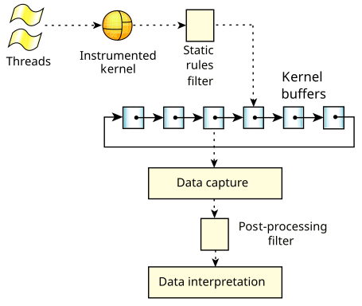

Gathering many events generates a lot of data, which requires memory and processor time. It also makes the task of interpreting the data more difficult.
Because the amount of data that the instrumented kernel generates can be overwhelming, the SAT supports several types of filters that you can use to reduce the amount of data to be processed:
The static rules filters affect the amount of data being logged into the kernel buffers; filtered data is discarded—you save processing time and memory, but there's a chance that some of the filtered data could have been useful. In contrast, the post-processing facility doesn't discard data; it simply doesn't use it—if you've saved the data, you can use it later.

Most of the events don't indicate what caused the event to occur. For example, an event for entering MsgSendv() doesn't indicate which thread in which process called it; you have to infer it during interpretation from a previous thread-running event. You have to carefully choose what you filter to avoid losing this context.